MLB's In-Venue Product team wanted to better understand why people at baseball games spend money the way they do. The working assumption was that changes to the food and beverage experience would have the biggest impact, but they weren't certain and didn't know what to do if the hunch was right.
My job was to find out where to invest time and effort, then figure out what needed to change and how.
This wasn't just a research problem. It required helping an organization with a long history move past assumptions that "felt right" and replace them with real knowledge grounded in how fans actually behave.
- Design Thinking
- Ethnographic Field Research
- Intercept Interviews
- Direct & Indirect Observation
- Opportunity Gap Surveys
- Anchored Max-Dif Surveys
- In-Depth Interviews
- Jobs to Be Done
- Journey Mapping
- Behavioral Segmentation
- Co-Creation Workshops
- Experiment Design
- Multi-year Roadmapping
First I validated the assumption that F&B was the place to play through surveys that asked what (other than the game and what happens on the field) makes going to the ballpark feel like "Baseball" and without it would ruin the experience. Of every aspect fans mentioned, The Food what the answer that felt most critical and, importantly, was something the clubs would control.
Next I travelled to ballparks around the country to conduct field research in the actual environment, during actual games. I watched fans move through concourses, stood in lines and experienced everything fans experience first hand, and talked to people in every phase of the purchasing and dining processes. I watched for patterns in the behaviors of fans and staff, the environment, the design of the products and services involved, and kept track of the context for each.
This was not focus groups or survey-driven segmentation. The goal was to understand what people were actually trying to do in context.
I conducted workshops with the venue product teams, interviewed ballpark staff about business strategies and goals, and ran in-depth one-on-one interviews to understand what they're actually trying to accomplish at different moments in the ballpark experience as opposed to asking what they wanted to be different.
Finally, I synthesized the research to understand what was driving those patterns and where there were real opportunities to act.
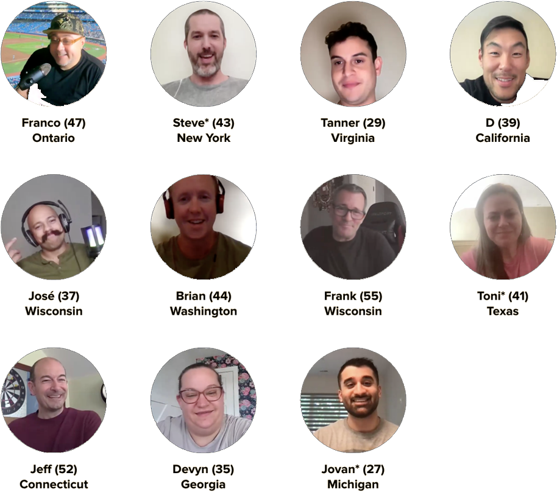
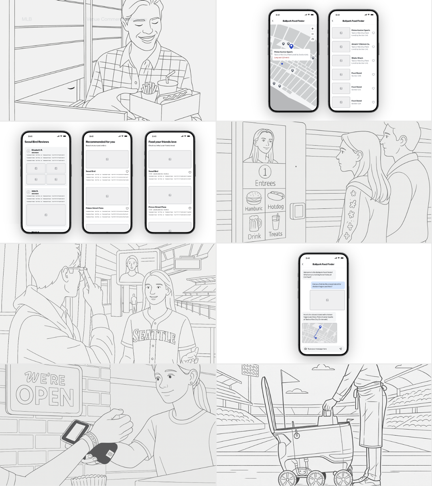
We found that every fan is both "Researching" and "Ritualizing" at any given moment, starting long before purchasing tickets and extending well beyond leaving the park after the game. In the concourse they are either "Focused" (I know what I want and/or where it is) and "Exploring" (I am open minded and could be persuaded).
Fan behaviors shift substantially depending on what they're trying to accomplish and the context of that moment, culminating in five priority insights to address:
- The cognitive load + information access impacting purchasing decisions (including not purchasing at all).
- The engagement + the fan experience while in a concessions line (whether short or long).
- Whether optimizing for speed has reduced a desired human interaction (and leaves fans guessing).
- Getting food usually means missing the moment (which leads to second guessing).
- Being a parent or leading a group changes everything (amplifying every pain point).
These insights show that the concourse environment, and the operational decisions the clubs and Concessionaires have made are actively working against those mindsets and modes. A fan who doesn't know what's available, or doesn't know how long a line will take, doesn't just feel frustrated. They feel FOMO and go back to their seat or compromise their choices. They are constantly in fear of missing a special moment.
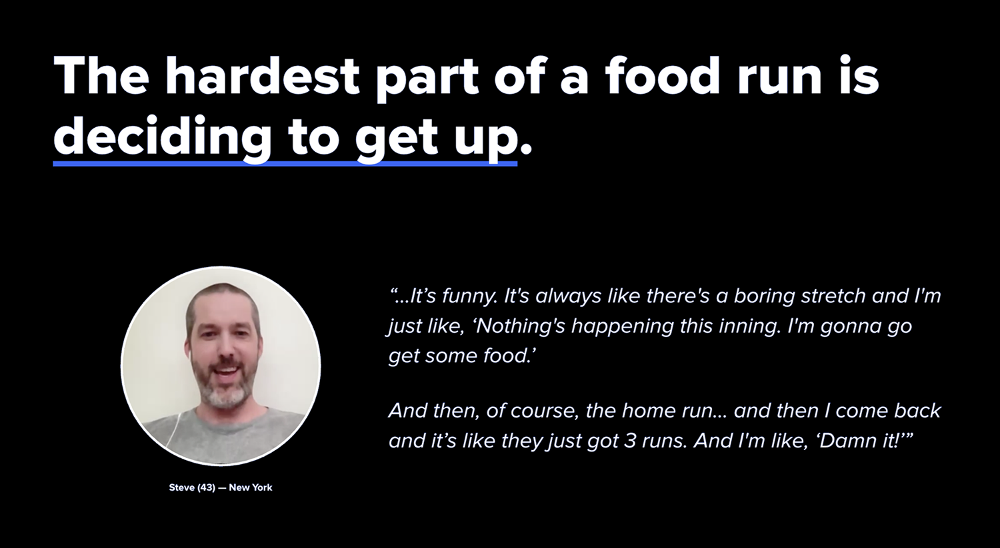
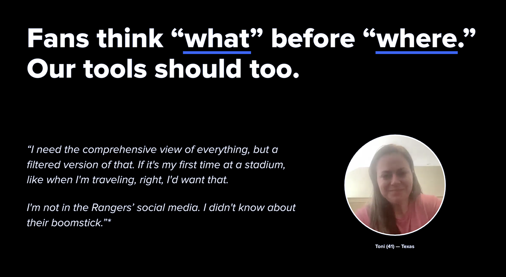
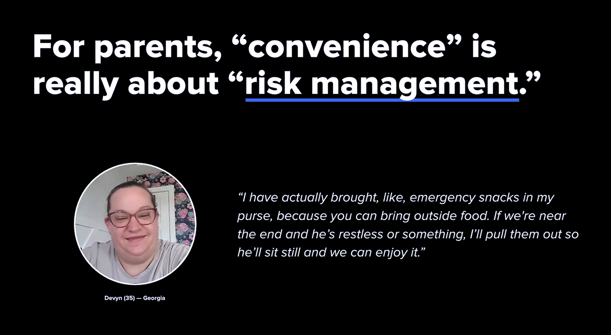
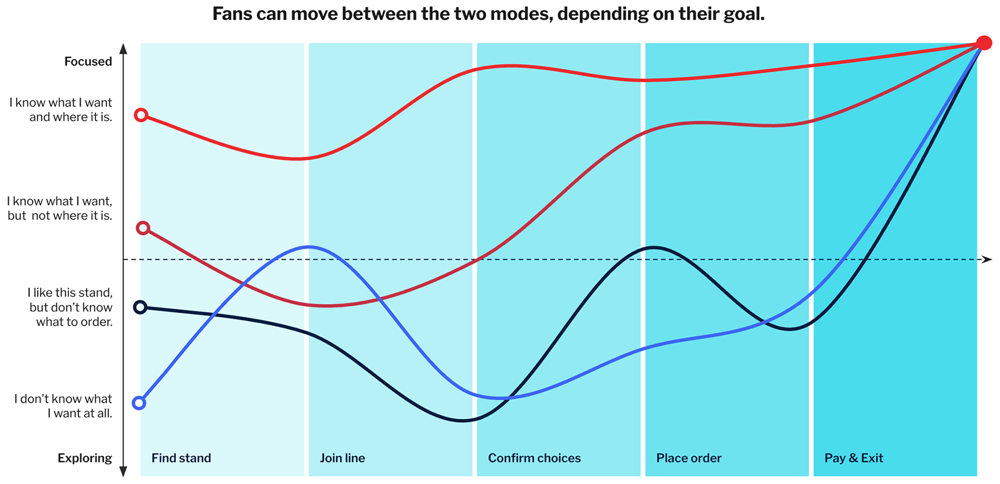
Fans can move between modes depending on their goal — and the concourse experience rarely accounts for this.
Going into the work, most people at MLB and at the Ball Clubs (and also at the Concessionaires operating the food stands) assumed speed was the problem and faster flow rates through each stand would fix it. In other words, "fans want to get food faster, so we should automate and switch to self checkout as much as possible."
That turned out to be incomplete and overlooked key behavioral determinants. The bigger opportunities were giving fans confidence, autonomy, access, and hospitality. That's a fundamentally different design brief and changes what you invest in, what you solve through technology, how you lay out space, your operational decisions, and what information you surface when.
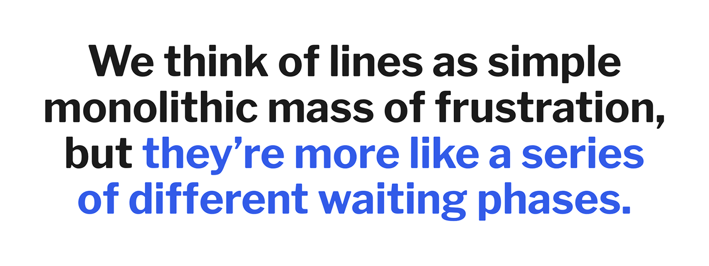
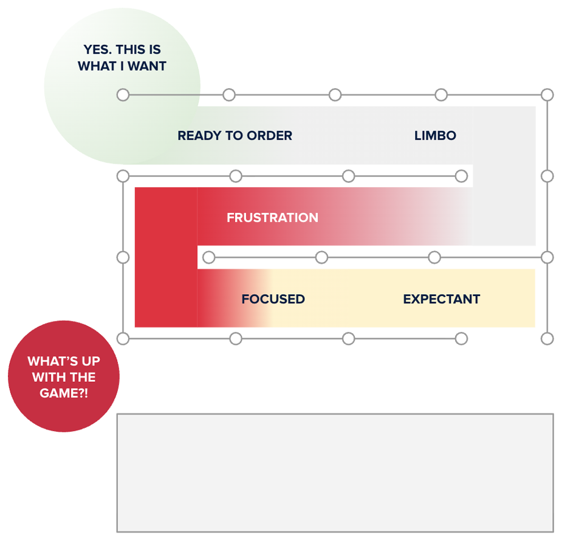
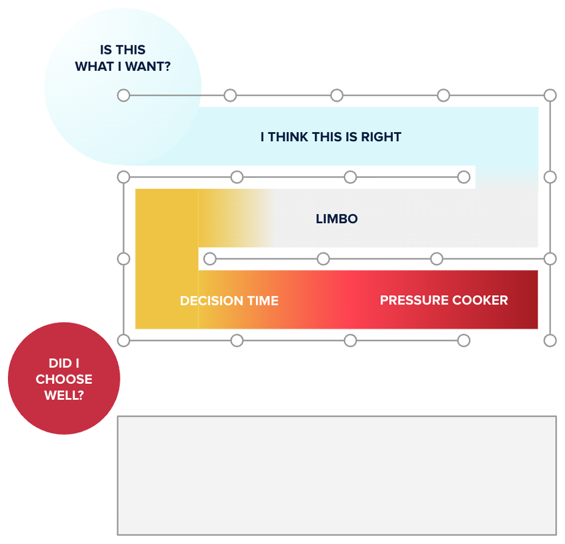
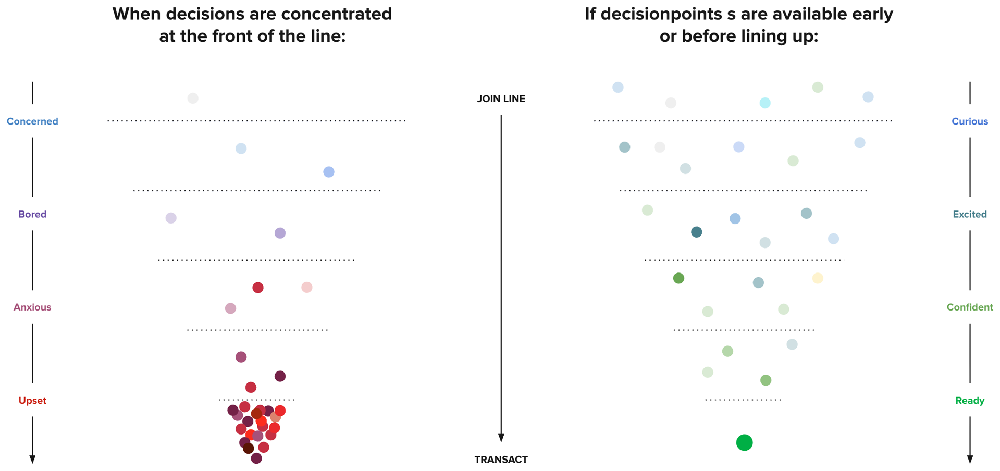
Caption TBD.
The findings shifted what the league decided to prioritize going into the next planning cycle and was enthusiastically received by all 30 teams. Notably, the NY Yankees, a notably self-sufficient and independent club, were first to volunteer to partner on solution development.
This created three big opportunities for the League:
- Reimagine phygital touchpoints to minimize F&B's intrusion on the fans' engagement with the game and their party (e.g., Simplified and Refactored Stands & POS, Focused vs Exploring Service Experiences, Traffic Management, Smart Nudging)
- Personalize food discovery by making it easy to find F&B options that will make the day feel special (e.g., Context- & Intent-Aware Products, Humanized & Timely Information, Intelligent Guidance)
- Simplify group dining by making managing F&B so simple that group organizers can enjoy the game instead of playing 'butler' (e.g., Synced Fan Accounts, Group Purchase Features, Services Specifically for Kids, Meaningful Preferences Beyond Loyalty)
The findings shifted what the league decided to prioritize going into the next planning cycle and was enthusiastically received by all 30 teams. Notably, the NY Yankees, an especially self-sufficient and independent club, were first to volunteer to partner on solution development.
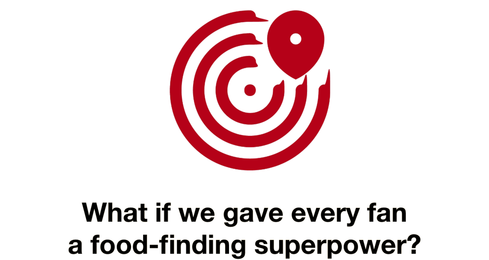
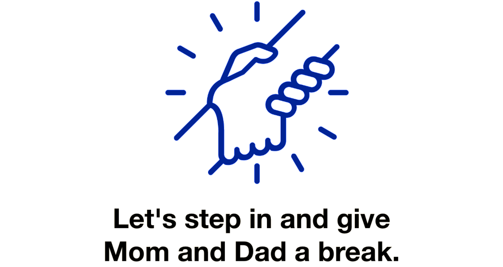
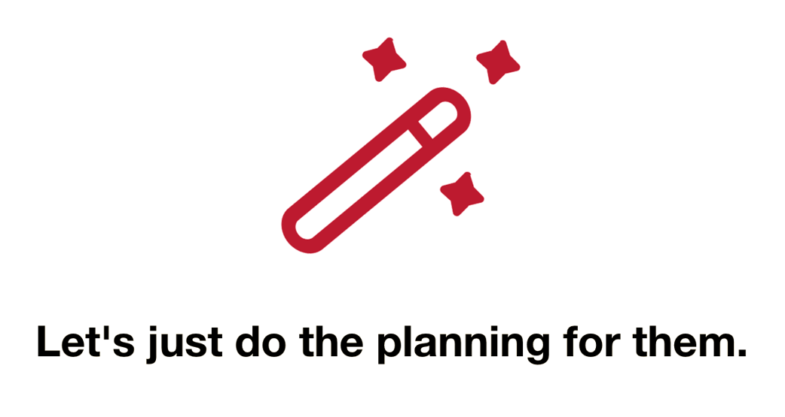
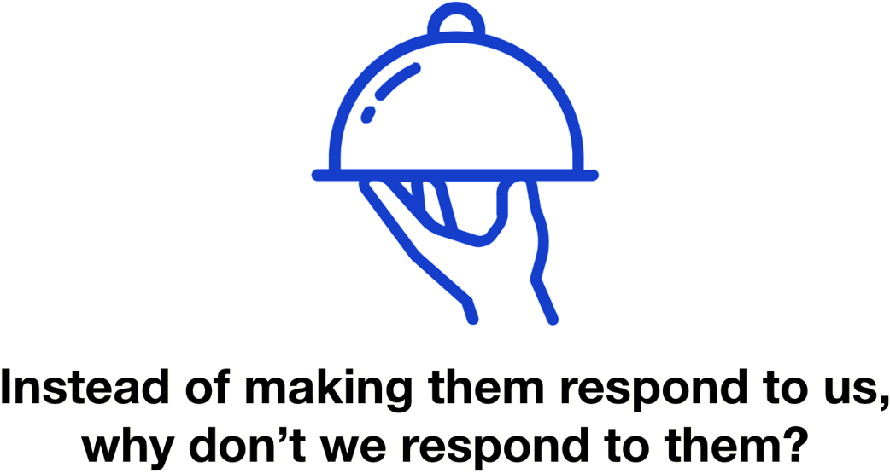
22 actionable insights incorporated into the long-range vision for fan experience now driving 2026+ planning across the league
Of 13 strategic recommendations developed, three were adopted as foundational initiatives to launch on opening day
Ethnographic Research standardized as governance-level input to the league's planning process as a result of these findings being presented to league executives and at industry conferences